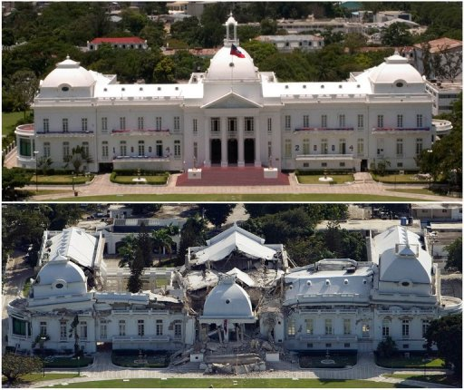

La bactérie Vibrio Cholerae peut-être transportée dans l'eau (ici si vous ne l'avez pas déjà lu) et l'eau est facilement contaminée, en quoi le séisme de 2010 a changé la donne en matière d'accès à l'eau potable et d'assainissement ?
Le séisme
Un tremblement de terre de terre de magnitude 7,3 sur l'échelle de Richter frappa la côte Ouest d'Haïti (y compris sa capitale, Port-au-Prince) le 12 Janvier 2010 aux alentours de 17h. Le foyer du séisme était à 10 km de profondeur. Le séisme n'a pas juste frappé une fois, mais plus d'une centaine de fois, provoquant ainsi effondrement, morts, blessés, sans abris et panique en masse. Le séisme a été décrit comme le plus important et le plus meurtrier de l'histoire d'Haïti. Le palais présidentiel a même été touché, provoquant la mort de plusieurs membres du gouvernement. De plus, la prison de Port-au-Prince en ruines a permis à des milliers de prisonniers de s'échapper laissant le pays en proie au chaos et au crime. Le palais de Port-au-Prince avant et après le séisme :

S'ajoute à cela, l'écroulement du quartier général de la Mission Des Nations Unies pour la stabilisation en Haïti, causant la mort de plus de 150 casques bleus. Quelques jours/semaines après des répliques du séisme ont frappé à nouveau le pays, le plongeant ainsi encore plus dans le chaos. Le coût des réparations s'estime en milliards de dollars, somme pharaonique pour Haïti. Il est important de noter que la République Dominicaine n'a pas été touchée par les séismes (raison de plus de sa stabilité face au Choléra).
L'accès à l'eau potable et l'assainissement
Comme nous l'avons vu le séisme a été dur pour Haïti et les installations ont pris un choc. Des installations qui comme nous allons le voir n'était pas suffisante avant le séisme. La présence des ONG déjà avant les séismes en est la preuve vivante. Selon l'OMS (organisation mondiale de la santé) et l'UNICEF, dans une étude de 2004, 54 %...[étudier document wikipédia]. Haïti fait face à un véritable problème en matière d'accès à l'eau potable et d'assainissement et ce pour plusieurs raisons.
La première raison est d'ordre financière,